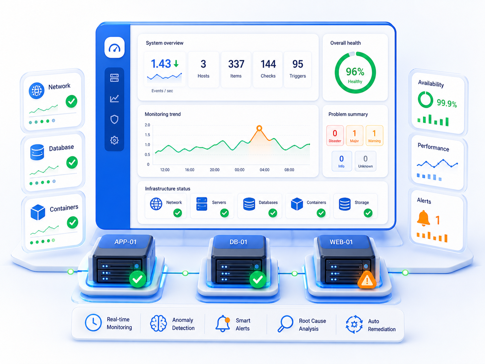
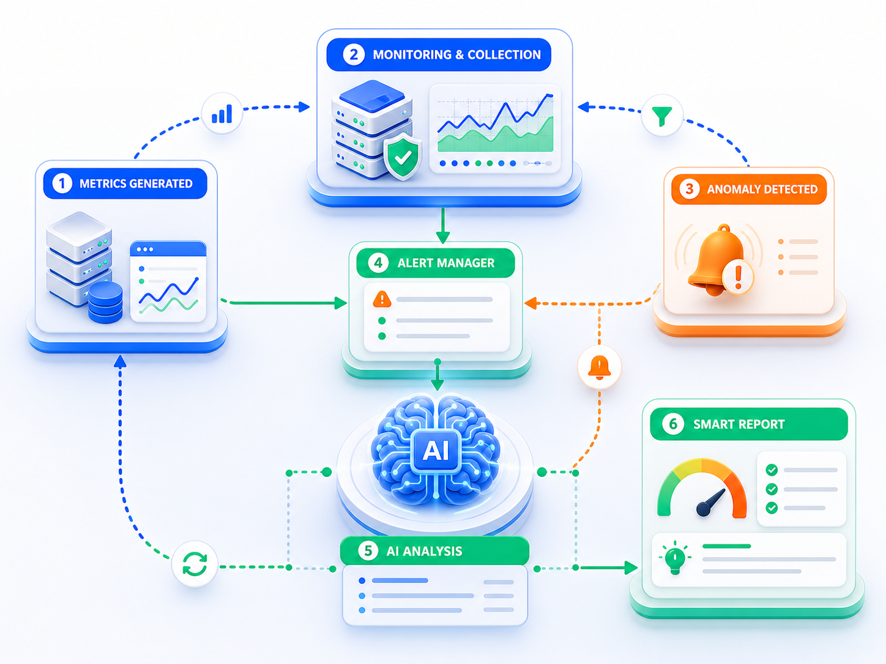
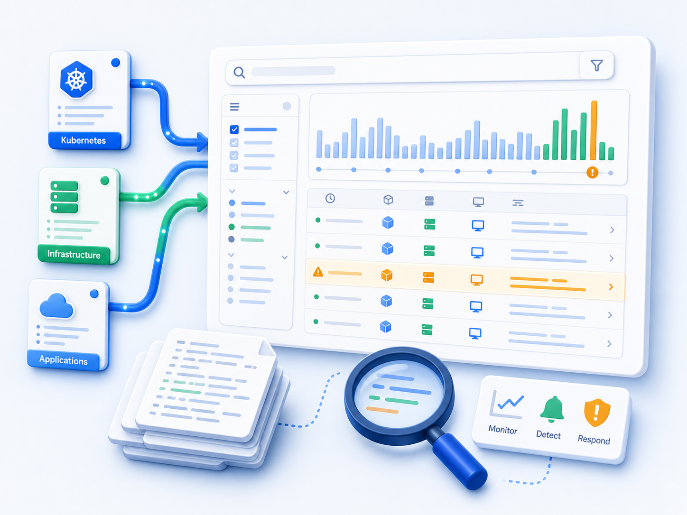
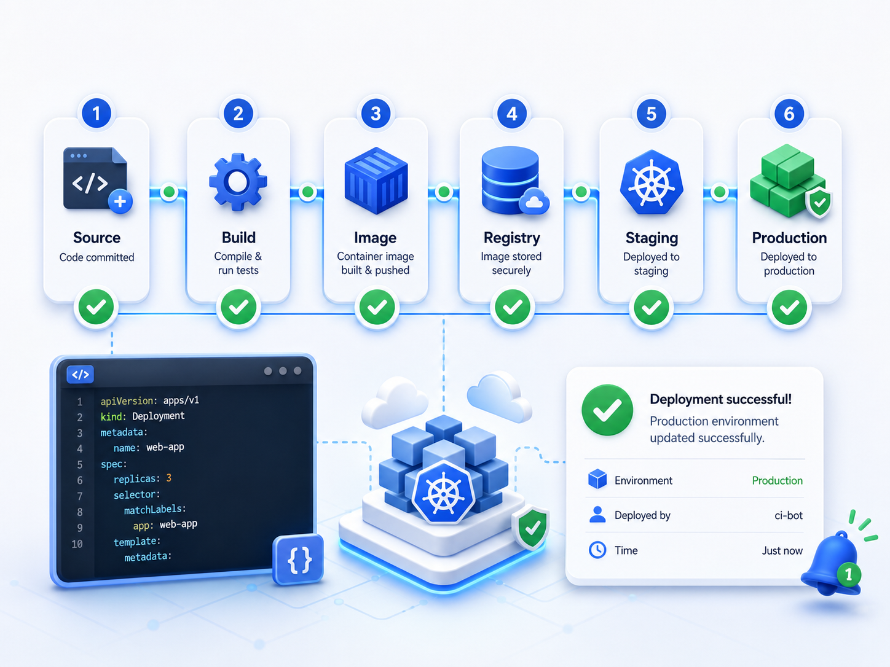
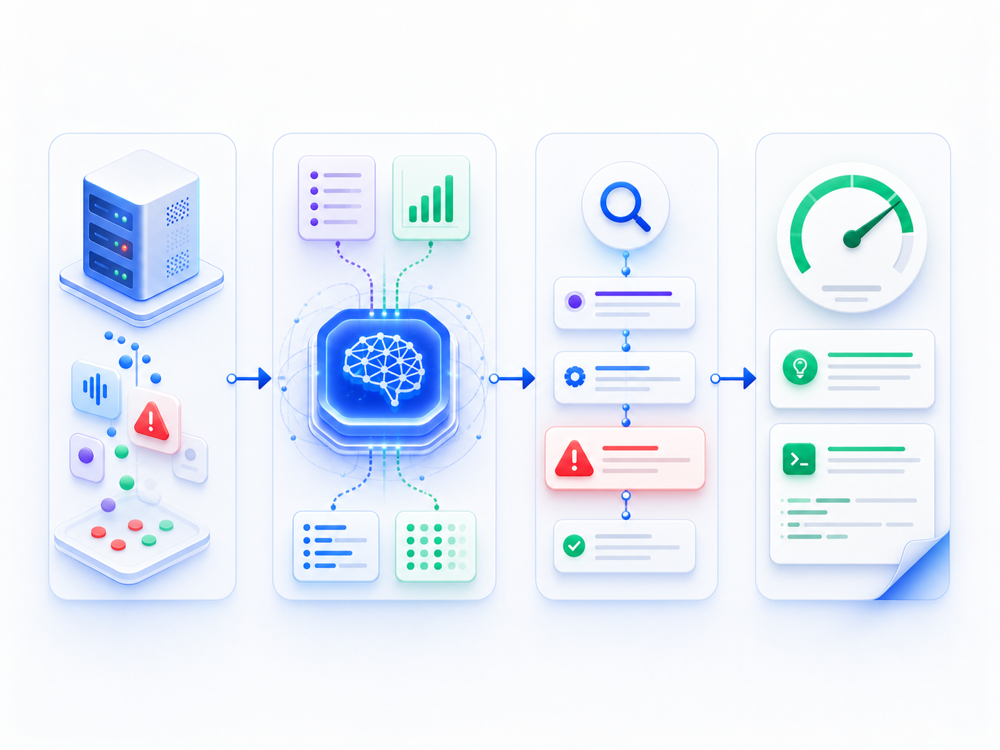
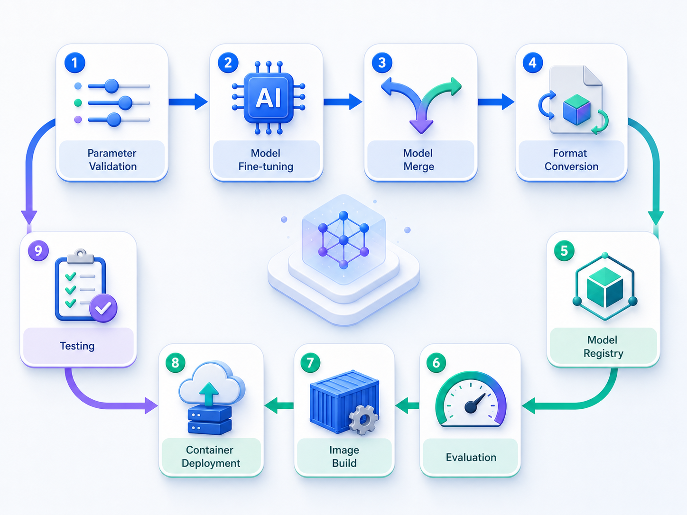

告警数量多，依赖人工逐条排查，处理效率低
AI自动聚合分析告警，并生成处理建议
AI不会淘汰运维，AIOps会。

越来越多企业开始将AI接入监控、日志、告警和自动化运维流程，能够把AI与运维结合的人，将拥有更强的竞争力。
告警数量多，依赖人工逐条排查，处理效率低
AI自动聚合分析告警，并生成处理建议
日志分散且繁杂，人工检索难以快速定位问题
AI智能完成日志归因、异常识别与根因分析
监控阈值主要依靠个人经验，容易误报或漏报
AI结合历史数据自动生成并持续优化阈值
关键经验依赖资深人员，难以沉淀和复用
知识库与智能体沉淀经验，辅助快速诊断
巡检、重启、发布等工作长期占用人工时间
Python + K8s + MCP实现自动化智能运维
面向运维、云原生、DevOps、DBA 与 AI 开发等技术人群，建立可落地的智能运维能力。
想从“装系统、查日志、处理告警”升级到“会智能告警、会自动化、会AI运维”的技术人。
岗位转型想深入掌握Kubernetes核心资源、调度、部署、监控，并结合AI完成智能诊断和自动化管理的人。
能力进阶想用Jenkins、ArgoCD、Python、K8s和AI提升CI/CD交付效率，推动团队自动化升级的人。
效率升级想把AI用于MySQL、Redis、MongoDB等数据库性能分析、慢查询分析、监控预测的人。
智能分析想把大模型、RAG、知识库、智能体、多模态模型部署到本地或K8s环境，做实际项目落地的人。
项目拓展想系统理解NLP、RNN、注意力机制、Transformer、大模型微调、向量数据库与智能体应用的人。
体系学习从基础到实战，全方面掌握AIOps
18大精品模块，覆盖AI+运维完整技术体系
学习大模型、Prompt、Agent、RAG等核心概念，建立AI应用开发基础认知。
完成Linux、Docker、Ollama、DeepSeek、Kubernetes及Python开发环境搭建。
围绕Zabbix、Prometheus、Grafana建立企业智能监控体系。
接入DeepSeek分析告警和日志，生成异常判断、根因定位与处理建议。
学习Kubernetes核心资源、ArgoCD、AI Agent及自动化运维场景。
掌握Zabbix架构、监控项、触发器、自动发现、Grafana可视化和统一告警。
掌握Prometheus数据模型、PromQL、服务发现、Alertmanager与K8s监控。
完成Elasticsearch、Fluentd、Kibana日志采集、检索、分析与异常追踪。
学习Python基础、LangChain核心组件、链式调用和企业AI应用开发。
综合监控、告警、日志、Kubernetes与AI能力，完成企业级AIOps项目落地。
学习VibeCoding思维、提示词实战、Cursor开发与智能体应用构建。
掌握DeepSeek开放平台API接入、应用集成及企业场景开发。
围绕LangChain核心组件、应用开发与全栈落地展开实践。
学习模型微调、多智能体协作及企业级大模型高级应用。
使用自然语言管理Kubernetes、MySQL等基础设施与服务。
理解OpenClaw核心架构、运行原理与智能运维应用场景。
开发K8s Pod诊断、日志分析、自动阈值和知识库问答工具。
完成模型微调、部署、评估、发布及全生命周期管理。
所学即所用，每一个项目都来自企业真实场景

基于Zabbix搭建统一监控、自动发现、Grafana可视化与统一告警。

结合Prometheus与DeepSeek，实现AI智能告警分析、风险判断与处理建议。

搭建EFK日志平台，实现日志采集、检索、分析与异常追踪。

结合Python、Jenkins、Kubernetes，实现持续集成、多环境发布与自动化部署。

利用DeepSeek完成日志智能分析、故障定位与自动报告生成。

完成模型微调、部署、评估、发布及全生命周期管理。
崔老师主讲大模型基础、高级应用、AI与运维结合开发；韩老师主讲K8s、云原生、Python基础、运维工具实践。两条能力线组合，兼顾AI与运维落地。
不只讲概念，还会在Python、Zabbix、Prometheus、EFK、K8s等场景中安排大量实践操作，让学习结果更接近真实工作。
围绕智能告警、日志分析、性能预测、自动重启、K8s诊断、知识库问答等场景，把知识放进项目里学习。
基于大模型能力实现监控数据自动预测、日志智能分析、故障诊断、自动阈值生成，让学员学到真正可落地的AIOps技能。
Zabbix、Prometheus、EFK、Kubernetes、Jenkins、ArgoCD、DeepSeek、LangChain、LLMOps、MCP等主流技术一次串联。
AI开发×云原生运维 双领域专家
 崔皓
崔皓51CTO学堂特级讲师，22年IT行业经验，曾任职惠普、中科曙光。
长期深耕大模型、智能体、RAG、LangChain及企业AI应用开发，擅长将复杂AI技术拆解为可落地的项目实践。
 韩先超
韩先超51CTO学堂K8S教学总监、Python教学总监，Kubernetes架构师、云计算架构师。
长期从事Linux、Kubernetes、DevOps及企业级运维实践，拥有丰富的大型项目经验。
通过视频课、直播课与项目实战，解决“学不会、没时间、没人答疑”的顾虑。
随时学习，适合利用碎片时间推进；课程体系完整，适合从基础到项目逐步消化。
18个模块内容，10必修 + 8选修，120+小时围绕主流项目、课程扩展与问题答疑展开，帮助学员把知识点和工作场景连接起来。
8节直播课，每周1次，每次约2小时通过6大企业级项目，把监控、日志、告警、K8s、DeepSeek、LLMOps串联起来。
适合做简历项目、工作复盘、团队内训案例学完后，可以将智能告警、根因分析、日志分析、自动化脚本等能力应用到真实运维工作中，帮助团队更快发现问题、定位问题、处理问题，减少业务中断时间，提高运维效率。
通过系统学习AI与运维结合的方法，建立从传统运维到智能运维的能力框架，为后续学习边缘计算、数据治理、智能体平台、企业AI落地等方向打基础。
课程中的监控平台、日志平台、智能告警、K8s诊断、MCP自然语言运维等项目，可以沉淀为作品集、技术分享、团队实践或岗位晋升材料。
加赠《DeepSeek使用指南：打造专属你的AI生产力引擎》
如果还有其他问题，可以提交咨询，我们会根据你的基础和目标给出学习建议。
可以。课程从大模型入门、提示词工程、Python基础和环境搭建开始讲起，后面再逐步进入运维工具与AI结合场景。
适合。课程本身就是为传统运维升级AIOps设计的，会从Zabbix、Prometheus、EFK、K8s等常见运维工具切入，再逐步接入大模型能力。
课程强调理论与实践结合。既讲大模型、NLP、Transformer、MLOps/LLMOps等基础，也会安排Zabbix智能告警、Prometheus自动阈值、EFK日志分析、K8s诊断等项目。
课程围绕企业常见运维场景设计，包括监控、告警、日志、发布、K8s、数据库、模型部署等内容，适合把学到的方法迁移到实际工作中。